Module 5 — Alarms and Events Visualization | Pages 341–350
Event
Use Event to configure scripts that are executed when a client control event occurs.
In the Event drop-down list, select the event to run a script. For the selected event, the Parameters
list shows:
Type: The data type of each parameter
Name: The name of each parameter
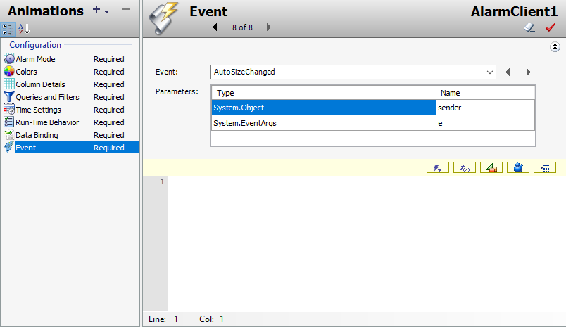
AVEVA InTouch AlarmClient Edit Animations dialog showing Event configuration tab (8 of 8) with AutoSizeChanged event, parameters sender/System.Object and e/System.EventArgs, blank script editor ready for custom event-triggered code
Introduction
In this lab, you will create a graphic and add the Alarm Client to it. The Alarm Client will be
configured to query, filter, and display current alarms at runtime. Additionally, you will use the
Alarm Client to acknowledge alarms.
Objectives
Upon completion of this lab, you will be able to:
Use and configure the Alarm Client to visualize current alarms
Configure and select alarm filters in the Alarm Client
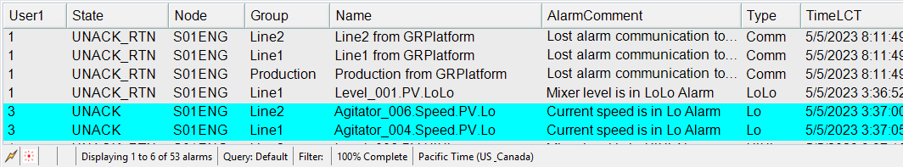
Alarm Viewer in AVEVA InTouch showing current alarms in a tabular grid with columns User1, State, Node, Group, Name, AlarmComment, Type, TimeLCT; displaying 6 of 53 alarms with UNACK_RTN state for communication and LoLo/Lo alarms for production lines
Create an Alarm Display
First, you will create a symbol with the Alarm Client. Then, you will add queries and filters for use
at runtime.
1.
In the IDE, on the Graphics tab, in the Training toolset, create a new symbol named
AlarmLiveDisplay, and then open it for editing.
2.
In Tools, click Alarm Client and place it on the canvas.
You will now configure the Alarm Client to filter the alarms for the Line1, Line2, and Production
areas.
3.
On the canvas, double-click the Alarm Client to configure it.
4.
With Alarm Mode selected, ensure Client Mode is set to Current Alarms.
5.
In Alarm Query, enter \\\Galaxy!Production.
Note:
Your instructor will provide your node name. In a real-world scenario, the node name
would point to a production node for the plant. For the purposes of this course, you will use the
GR node to provide alarms.
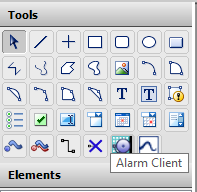
AVEVA InTouch Tools palette showing drawing and HMI tools including selection, line, rectangle, ellipse, arc, text, gauge, and the highlighted Alarm Client tool with tooltip for adding an alarm display component to the canvas
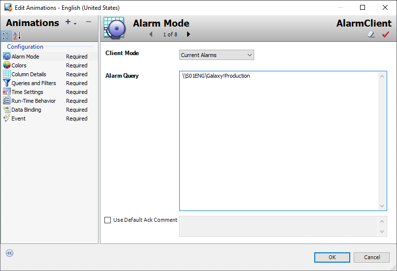
Edit Animations dialog for AlarmClient showing Alarm Mode configuration (1 of 8): Client Mode set to Current Alarms, Alarm Query path set to \\SO1ENG\Galaxy\Production, Use Default Ack Comment unchecked
6.
In Animations, select Queries and Filters.
7.
In Query and Filter Favorites, click Add new filter.
Add Query or Filter appears.
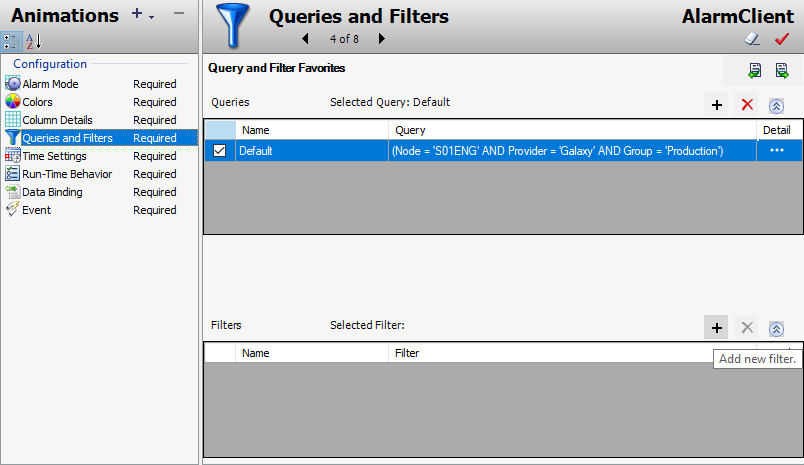
AlarmClient Queries and Filters configuration (4 of 8): Default query showing condition (Node='SO1ENG' AND Provider='Galaxy' AND Group='Production'), empty Filters section with Add new filter button
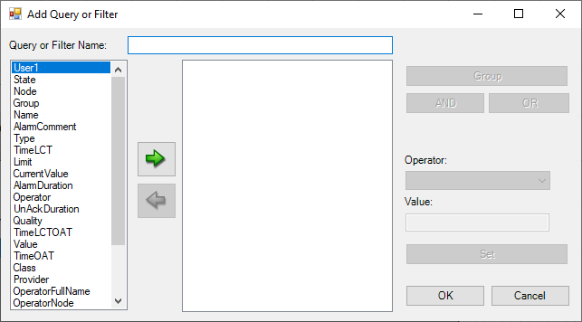
Add Query or Filter dialog showing empty filter builder with left panel of alarm fields (User1, State, Node, Group, Name, etc.), green arrow buttons for moving fields, Group/AND/OR logic buttons, Operator dropdown and Value input, OK and Cancel buttons
8.
In Query or Filter Name, enter Line1.
9.
On the left, in the filter criteria list, select Group, and then click the right arrow button.
Group is added to the filter definition list.
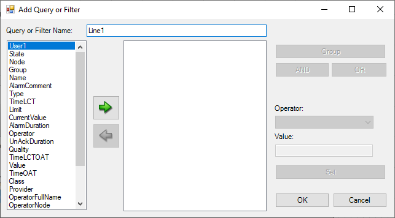
Add Query or Filter dialog with filter named 'Line1', Comment field selected in left panel, Group folder in center, ready to add filter criteria using Group/AND/OR logic and Operator/Value configuration
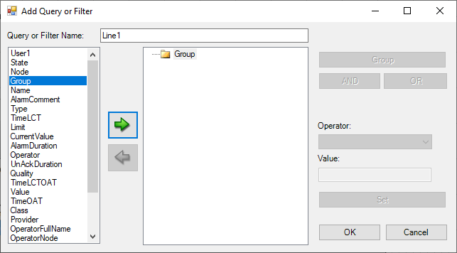
Add Query or Filter dialog with filter named 'Line1', Group field selected with = operator set, Value field empty, green arrow buttons for field movement, ready to define Line1 filter criteria
10. In the filter definition list, select Group, and then on the right side, in the Operator drop-down
list, verify = is selected.
11. In Value, enter Line1.
12. Click Set.
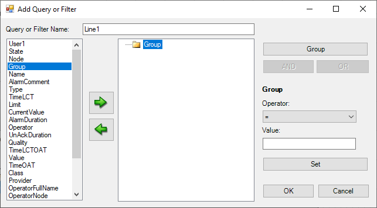
Add Query or Filter dialog showing Group field added to filter definition with = operator and Value set to 'Line1', Set button highlighted for confirming the Group=Line1 filter condition
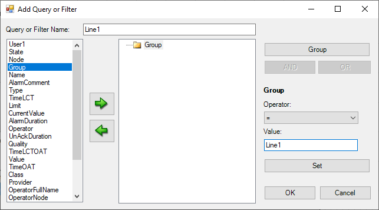
Add Query or Filter dialog with completed Line1 filter showing Group='Line1' condition in the filter rule display, Set button highlighted, filter ready to be saved with OK
The filter definition list is updated.
13. Click OK to close Add Query or Filter.
In Filters, the new filter is listed.
14. Click the Add new filter button.
15. In Query or Filter Name, enter Line2.
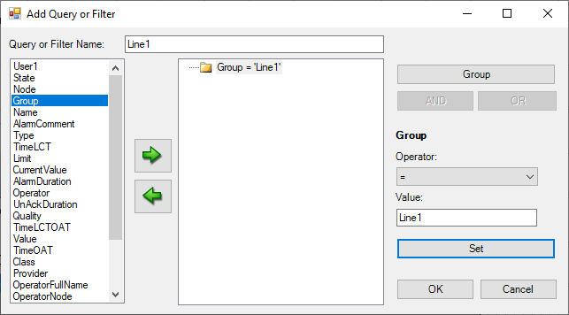
Add Query or Filter dialog with Line1 filter fully configured showing Group='Line1' equality condition, filter rule displayed in center panel, ready to save
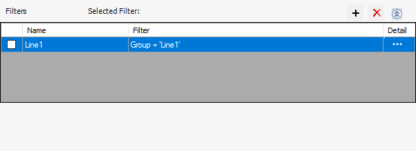
Filters management panel showing Line1 filter with Group='Line1' expression, with +, X, and sort buttons for managing alarm filters in the AlarmClient configuration
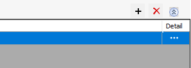
Detail pane header with blue toolbar, showing empty content area with +, X, and expand buttons for viewing detailed properties of selected alarm filter items
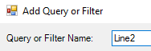
Add Query or Filter dialog showing new filter being created with name 'Line2', empty filter builder ready for defining the Line2 filter criteria
16. In the filter criteria list, select Group, and then click the right arrow button.
17. In the filter definition list, select Group, and then in Value, enter Line2.
18. Click Set.
19. Click OK to close Add Query or Filter.
20. Add a third filter for Group named Production with a value of Production.
The Production filter is added.
21. Click OK to close Edit Animations.
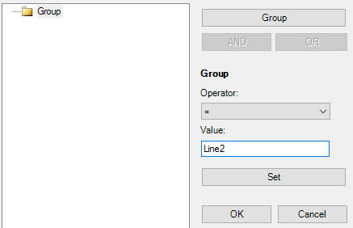
Add Query or Filter dialog with Line2 filter: Group field added with = operator and Value set to 'Line2', filter condition ready to be saved
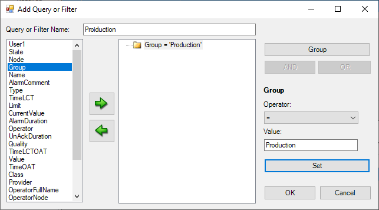
Add Query or Filter dialog showing Production filter being created with Group field selected, = operator, and Value set to 'Production' with filter name 'PrOduction' (typo in name)
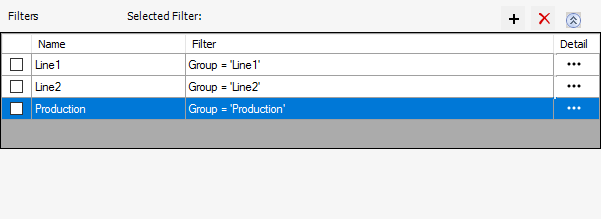
Filters management panel showing three filters listed: Line1 (Group='Line1'), Line2 (Group='Line2'), and Production (Group='Production' with checkbox checked and blue background indicating active selection)
22. Click AlarmClient and configure it as follows:
23. Save and close and check in the graphic.
Test in Runtime
Now, you will view current alarms in runtime.
24. In WindowMaker, embed AlarmLiveDisplay on the AlarmDisplay window.
25. In Properties, uncheck Maintain aspect ratio.
AlarmLiveDisplay is stretched to fit the window.
26. Click Runtime and verify that current alarms are displayed in the AlarmDisplay window.
Width:
1920
Height:
200
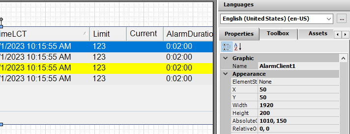
WindowMaker development environment showing AlarmLiveDisplay embedded in ContentDisplay window with alarm table grid, Consumed Materials panel, Select Mixer dropdown, and Industrial Graphics library with AlarmLiveDisplay highlighted in Properties panel
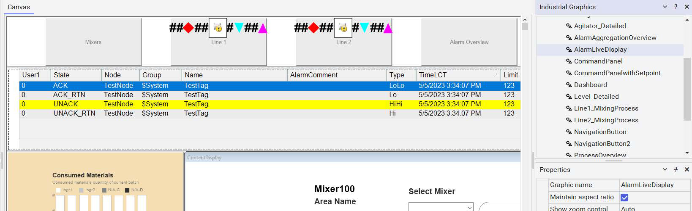
AVEVA InTouch runtime Alarm Overview screen showing live alarm table with columns User1, State, Node, Group, Name, AlarmComment, Type, TimeLCT, Limit, Current, AlarmDuration, Operator, UnAckDuration; displaying 6 of 53 alarms with UNACK_RTN and UNACK states for communication, level, and agitator speed alarms
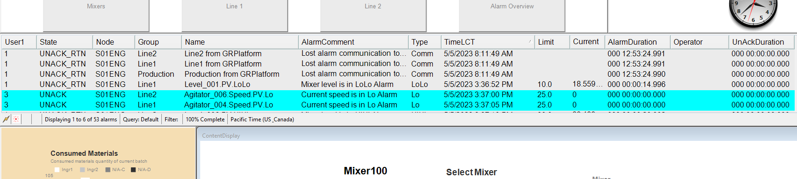
Full runtime HMI screen showing Alarm Overview tab active with alarm table displaying 53 alarms, Consumed Materials batch tracking panel, ContentDisplay area with Mixer100 and Select Mixer dropdown, navigation tabs for Mixers, Line 1, Line 2, and Alarm Overview, and analog clock showing ~5:32 PM
Knowledge Check
Q1: What are the key concepts covered in this lesson about Live Alarms Visualization?
Review the sections above for the main topics, step-by-step procedures, and important configuration details.
Q2: How does this topic relate to AVEVA System Platform?
This is part of the InTouch HMI layer, which integrates with Application Server's Galaxy for a complete visualization solution.
Module 5 — Alarms and Events Visualization. AVEVA InTouch for System Platform 2023 Training.
Next: Lesson L27 — Lab 14 – Current Alarms Display